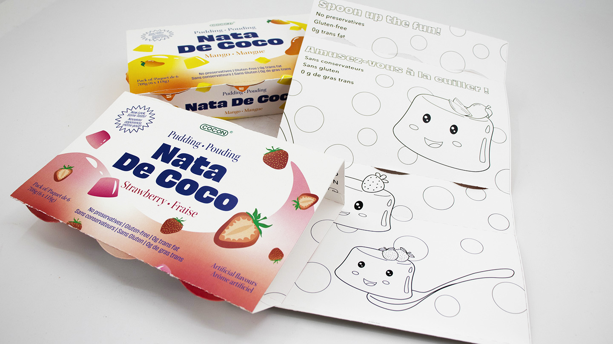
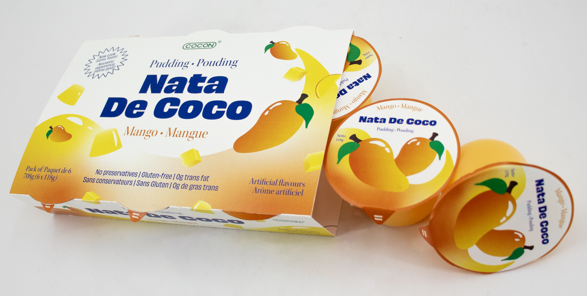

For my packaging design class, I redesigned the packaging for 3 flavours of Cocon’s Nata De Coco Pudding, a classic Asian snack manufactured by a Malaysian snack company. This product was chosen after identifying its weaknesses in sustainability, appealing to the target market, and visibility on the shelf.
Redesign Objectives
These objectives were determined after conducted a SWOT analysis for the original packaging and its direct competitors.
- Increased sustainability: using recyclable substrates and promoting reusability wherever possible
- Increased visibility: switching from one principle display panel (PDP) to two for versatile shelf placement
- Modernized branding for a more mainstream market: using brighter colours, updating illustrations, improving information hierarchy, and promoting health benefits
Sustainability Initiatives
The plastic wrapping encasing the pudding cups has been replaced with a recyclable paperboard wrap-around that allows for consumers to view the product from the side. This packaging form also allows for two PDPs: one on the top and one at the front. To promoted reuse and brand loyalty, the inside of the wrap-around has a colouring page for kids, extending the life-cycle of the packaging.
The pudding cups substrate has been replaced with PLA (polylactic acid) cups. It offers faster biodegradation, leaves no toxic residue under industrial composting conditions, and is made from from renewable plant-based materials like corn.
The Final Design Solution
The redesign takes inspiration from the classic local Malaysian packaging through the use of a serif font as well as the globalized packaging’s hierarchy, colours, and gradients. It is fun, appetizing, and friendly and has two PDPs for versatile placement on the shelf.
To make the product more accessible to a mainstream market, information about nata de coco and its health benefits are placed on the back panel.


Final Dielines